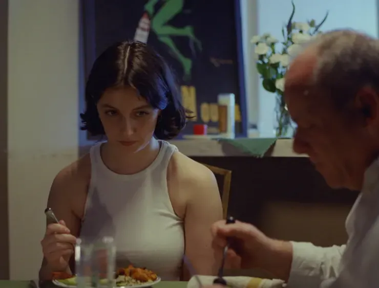

CAST:
Brent Langdon as "Hal"
Kristine Nielsen as "Julie"
Cynthia Koebele as "Nancy"
John Tohill as "John"
CREW:
Writer/Director: Matthew Koebele
Producers: Hanna Dzaferovic and Ryan Rosenthal
Associate Producers: Cole Fletchall-Silva and Matthew Koebele
Cinematographer: Cole Fletchall-Silva
Editor: Case Avron
Production Design: Ynes Lopez
1st AD: Taylor Richardson
1st AC/Loader: Alexandra Mettler
Gaffer: Frank Yu
Key Grip: Matan Hamam
Sound Mixer: Addison Knies
Boom Operator: Aiden Chavis
Post Sound Supervisor: Yuming Zhang
Foley Artist: Yuming Zhang
Post Sound Mixer: Jacob Boblitt
Script Supervisor: Case B. Avron
Special Thanks to Anne Hubbell and David Rosfeld.
Shot on Kodak 250D 16mm.
A DAY ALONE
CAST:
Carlo Fiorletta as "Thomas"
Steven Greenes as "Steven"
Ava Blaugh as "Ava"
CREW:
Writer/Director: Matthew Koebele
Producers: Matthew Koebele and Cole Fletchall-Silva
Cinematographer: Cole Fletchall-Silva
Editor: Matthew Koebele and Cole Fletchall-Silva
Key Grip: Case Avron
Sound: Luis Figueroa Caundedo
Shot on Kodak Tri-X 16mm.
ROBSTER
CAST:
Hank Johnstone as "Robert"
Rutger Scott as "Colin"
Rodney Koebele as "Dad"
Cynthia Koebele as "Store Mom"
Anthony Pappagallo as "Phone Kid"
Jobbi Eagle as "Mom"
Flora Nolan as "Customer"
CREW:
Writer/Director: Matthew Koebele
Executive Producers: Matthew Koebele and Alexandra Mettler
Producers: Cate Christiansen, Jessica DiMento, Maggie Soik
Associate Producers: Julie Chen and Flora Nolan
Cinematographer: Alexandra Mettler
Gaffer: Cole Fletchall-Silva
Editor: Case Avron
Production Design: Ynes Lopez
1st AD: Flora Nolan
1st AC: David Melean
Loader: Alexandra Mettler
Key Grip: Matan Haman
2nd AC / Grip Swing: Rhodri Beynon
Grips: Oliver Park, Aiden Dullaghan-Ripps, Don Ahmad
Sound Mixer: Lucas Manuel-Schiebe
Boom Operators: Alec Inagamov and Flora Nolan
Script Supervisor: Case B. Avron
Lobster Wranglers: Kelli Converso and Pietro Kralj
Lobster Acquisition: Jessica DiMento
Special Thanks to Anne Hubbell and Erik Christiansen.
Shot on Kodak 200T 16mm.

DAD COMES TO DINNER
CAST:
Libby Ronon as "Carol"
George Hauck as "Dad"
CREW:
Writer/Director: Matthew Koebele
Producers: Matthew Koebele and Alexandra Mettler
Cinematographer: Alexandra Mettler
Editor: Matthew Koebele
1st AD: Cate Christiansen
1st AC / Gaffer: Jason Wang
Sound: Aiden Chavis